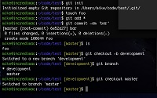

My Goals and Concerns
Taken from the "My First Website" project
I am taking this class to get an idea of whether web development is something I would like to pursue further. I have always gravitated toward things like building spreadsheets, databases, and operational procedures, and I think that coding could be the next step. It would be useful at times in my existing job, but I'm also open to the idea of moving out of my current industry completely and into something different. I'm also interested in the concept of developing Wordpress themes. I hope that by the end of the next two months I have enough of an idea of what is involved in developing a website that I can make an educated decision about whether to continue taking classes, take a more self-guided approach via online tutorials, or know that this is not for me.
I am coming into this class with extremely minimal knowledge. I can’t honestly say I really understand what JavaScript even is. Other than a Visual Basic 101 class at PCC about 8 years ago, and creating a few macros in Excel, I know basically nothing about coding. But I'm a quick learner and I feel like I've picked up a lot in the last week already, so I'm ready for more.
Caitlin Smith May 7th, 2015
Getting to know floats and git
and what a pain the butt they are
So far I am really enjoying this class. I’m finding the Treehouse videos very helpful because they serve as an introduction for each concept, then I’m able to explore more in class and on my own in the assignments. Coding really is a whole new language (actually html is a whole new language, and css is a whole new language, and javascript will be a whole new language), but it’s amazing how much you can pick up by doing.
As promised, I had some issues with floats, but I think I’m slowly getting it. I definitely had an “ah ha” moment this morning when Nathan pointed me in the direction of adding up all my widths in the header. I realized that my h1, menu, and margins all added up to about 170%. Once that was fixed everything fell into place.
Git is interesting. We’ve obviously just scratched the surface, but I’m following and I feel like it’s making sense to me. I can add, commit, merge, and push like a champ. I got a lot out of Thursday’s partner exercise. It was really good to work with a partner physically sitting next to me so we could see everything being done on both sides and discuss why things were working the way they did.
I’m going to keep working on this journal and then I need to make some more time for Treehouse lessons. Onward and upward…
Caitlin Smith May 16th, 2015